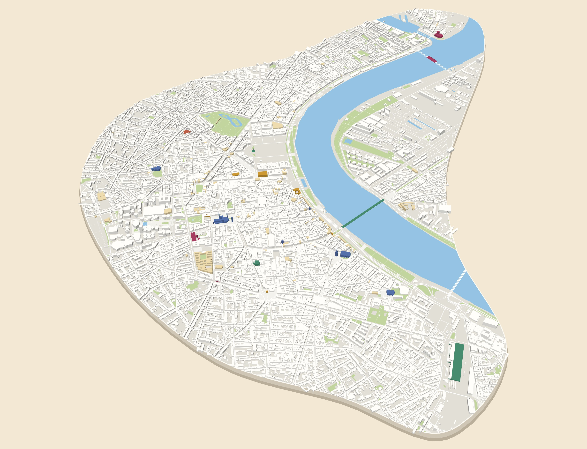

Bordeaux · Patrimoine mondial de l'UNESCO
Port de la Lune
Les monuments historiques de Bordeaux, en relief
Deux mille ans d’histoire, de l’amphithéâtre romain à la Cité du Vin.
N

Bordeaux · Patrimoine mondial de l'UNESCO
Les monuments historiques de Bordeaux, en relief
Deux mille ans d’histoire, de l’amphithéâtre romain à la Cité du Vin.